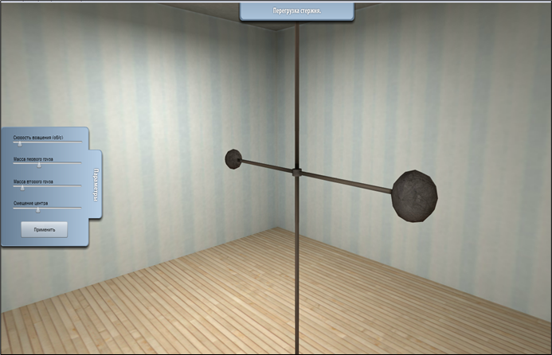
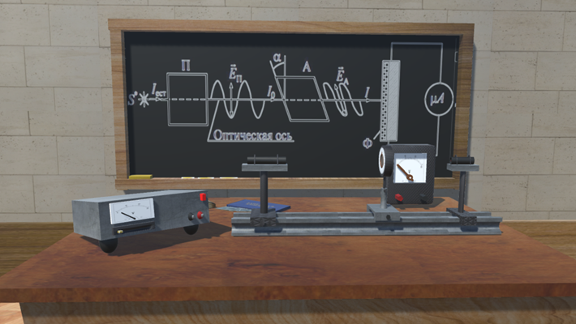

ИМИТАЦИОННОЕ МОДЕЛИРОВАНИЕ
Моделирование является одним из основных инструментов исследования дина-мических объектов, процессов и явлений в живой и неживой природе.
В общем случае методы моделирования ориентированы на решение практических задач с целью получения оптимального решения.
Реализация методов математического моделирования должна включать следующие этапы:
- Формализация исходной проблемы.
- Построение математической модели.
- Решение модели.
- Проверка адекватности модели.
- Реализация решения.
Однако всегда существует класс объектов, для которых не разработаны аналитические модели, либо не разработаны математические методы решения полученной модели.
МЕТОДЫ ИМИТАЦИОННОГО МОДЕЛИРОВАНИЯ
Под термином имитационное моделирование понимают метод исследования, при котором изучаемая система заменяется моделью, с достаточной точностью описывающей реальную систему, с которой проводятся эксперименты с целью получения информации об этой системе.
Различие между математической и имитационной моделями заключается в том, что в имитационной модели отношение между «входом» и «выходом» модели может быть явно не задано. В этом случае аналитическая модель заменяется имитатором или имитационной моделью.
К имитационному моделированию прибегают, когда:
- дорого или невозможно экспериментировать на реальном объекте;
- невозможно построить аналитическую модель поведения системы;
- необходимо просто имитировать поведение системы во времени для понимания ее сущности;
- необходимо создать имитационую модель установки для обучения работы персонала работе на реальной установке.
При имитационном моделировании реальная система, как правило, разбивается на ряд достаточно малых в функциональном отношении элементов или модулей. Затем поведение исходной системы имитируется как поведение совокупности этих элементов, определенным образом связанных в единое целое путем установления соответствующих взаимосвязей между элементами системы. При этом реализация такой модели начинается с входного элемента, далее последовательно проходит по всем элементам цепочки, пока не будет достигнут выходной элемент модели.
Цель имитационного моделирования состоит в воспроизведении поведения исследуемой системы на основе результатов анализа наиболее существенных взаи-мосвязей между ее элементами или, другими словами, разработке симулятора исследуемой предметной области для проведения различных экспериментов.
ПРИНЦИПЫ ИМИТАЦИОННОГО МОДЕЛИРОВАНИЯ
Имитационное моделирование позволяет имитировать поведение системы во времени, причем временем в модели можно управлять: замедлять в случае с быст-ропротекающими процессами (модели различных взрывов) и ускорять для моде-лирования систем с медленной изменчивостью (модели роста леса).
Имитационная модель рассматривается как специальная форма математиче-ской модели, в которой:
- декомпозиция системы на компоненты производится с учетом структуры про-ектируемого или изучаемого объекта;
- в качестве законов поведения могут использоваться экспериментальные дан-ные, полученные в результате натурных экспериментов;
- поведение системы во времени иллюстрируется динамическими графическими образами.
ПРИМЕРЫ ИМИТАЦИОННЫХ МОДЕЛЕЙ
Одним из главных достоинств систем визуального моделирования является то, что они позволяют создавать на компьютере удобную среду, в которой можно со-здавать виртуальные функционирующие системы и проводить эксперименты с ними. При этом графическая среда становится похожей на физический испытательный стенд, только вместо тяжелых металлических ящиков, кабелей и реальных измери-тельных приборов, осциллографов и самописцев пользователь имеет дело с их обра-зами на экране дисплея.

3D-симулятор для изучения явления перегрузки стержня

3D-симулятор для изучения явления поляризации света
ЗНАЧЕНИЕ ИМИТАЦИОННОГО МОДЕЛИРОВАНИЯ
Имитационные модели значительно гибче в представлении реальных систем, чем их математические «конкуренты». При имитационном моделировании исходная система рассматривается на элементном уровне, в то время как математические модели стремятся описать системы на глобальном уровне.
В действительности сложные многоэлементные модели с многообразными свя-зями очень редко могут быть описаны уравнениями. Зачастую зависимости выража-ются табличными и логическими соотношениями, правилами «если – то». При этом построенная на их основе имитационная модель исследуемого явления или поведе-ния установки, состоящая из взаимосвязанной цепочки компонент, каждая из кото-рых точно описывается вычисляемыми функциями, может быть использована для многовариантных расчетов в процессе исследования любых явлений и разработки любых изделий.